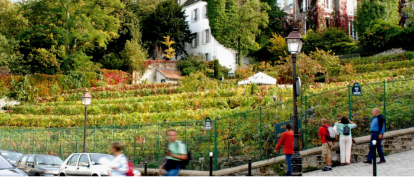

Do arquivo RENDEZVOUS
A história por trás das imagens
Quase escondido na colina de Montmartre, este pequenino vinhedo (se é que podemos chamar assim), é talvez um dos mais curiosos do mundo.
Não hesite em fazer o download e a instalação do plugin Google EarthMas nem sempre foi pequeno assim. “Paris já foi muito maior do que é hoje e, até 1833, era o maior território vinícola da Europa, com 40.000 hectares de parreiras plantadas”. Explica Gilles GUILLET, presidente da Comenda do Clos Montmartre. “Os primeiros traços de parreirais que foram encontrados em Montmartre datam do ano 900.”
O apogeu da região vinícola parisiense foi durante o século XVIII, quando era a maior da França, a frente de Bordeaux ou da Borgonha. A reputação dos vinhedos de Montmartre, porém, é bem mais antiga. Em 1474 já existia a apelação “Goutte d’Or” e, sob o reinado de Saint Louis (Louis IX, 1214-1270) foi organizada uma classificação dos grandes vinhos da época, presidida por um filósofo chamado Rudolf: O primeiro prêmio foi dado ao vinho de Chipre, proclamado “Papa dos vinhos”; o segundo prêmio, ao vinho de Málaga, “Cardeal dos Vinhos”; o terceiro foi compartilhado entre o vinho da casta Malvasia, de Alicante e o Goutte d’Or, declarados os “Reis dos vinhos” – Rei dos vinhos e vinho dos Reis pois o Goutte d’Or era um dos vinhos preferidos de Saint Louis e Henri IV.
Do século X para cá, Paris mudou bastante, inclusive seu status vinícola. No lugar dos vinhedos da Goutte d’Or, hoje temos um bairro (que guarda o nome) árabe/africano, onde milhares de muçulmanos se encontram para a prece de sexta-feira, ocupando as ruas e calçadas, gerando uma grande tensão social num país laico.
O pequenino vinhedo de 1.556 m² na esquina das ruas Saint Vincent e des Saules, teve sua origem em 1933, quando a prefeitura de Paris decide dar fim ao terreno baldio que servia de ponto de moradores de rua, plantando 2.000 pés de vinha das variedades mais tradicionais de regiões vinícolas da França, e uma seleção de híbridos “férteis e vigorosos”. A qualidade do Clos Montmartre, porém, nem de longe se aproximava do renomado Goutte d’Or.
Foi então em 1995 que a prefeitura, em parceria com a direção de Parques e Jardins, decide contratar um enólogo, com a missão de produzir um “vinho de verdade”. Grandes investimentos foram feitos, na época, para modernizar e profissionalizar os equipamentos e o material de vinificação. Hoje, com 1.762 pés de 27 castas diferentes (sendo 75% Gamay, 20% Pinot Noir e o resto sendo Seibel, Merlot, Sauvignon blanc, Gewurztraminer, Riesling…) produzem cerca de 2.000 garrafas de 500ml cada.
Outra particularidade é a produção do vinho pois toda a colheita é feita pelos jardineiros da prefeitura, que depois, se encarregam de todo o processo. Da vinificação até o engarrafamento, tudo é feito no subsolo da subprefeitura do 18° distrito (arrondisement), sob a supervisão do enólogo Francis GOURDIN, que também é funcionário da prefeitura. E é por isso que o Grão Mestre de Honra da Comenda do Clos de Montmartre é o prefeito de Paris (o primeiro grão mestre foi o ex-presidente Jaques Chirac, quando estava à frente da prefeitura da capital).
Mas o que é a Comenda do Clos Montmartre?
“Uma Comenda é uma associação com espírito Cavalereisco, como na idade média, que tem como objetivo defender e promover o Clos Montmartre, tanto na França como através do mundo”, explica Gilles GUILLET, o Grão Mestre executivo que impulsionou a evolução qualitativa do vinho do Clos. Criada em 23 de maio de 1983, ela conta com 200 adeptos e 60 simpatizantes.
A sede da Comenda fica numa construção surpreendente, situada alguns metros mais acima na colina que o vinhedo, no 9bis rue de Norvins (quase na esquina da visitadíssima Praça do Tertre). Uma pequena torre octogonal, construída em 1835, e que servia de reservatório d’agua para que os moradores não precisassem subir e descer o morro carregando água. O interior, praticamente vazio, empresta ares de sociedade secreta à Comenda, que possui sua própria simbologia, rituais de entronização (adesão de novos mebros) e hierarquia. A sede da Comenda tem seus próprios pés de vinha (cerca de 200) que parecem muito mais um jardim decorativo do que propriamente um vinhedo, mas que também produz seu próprio vinho, este último, devido ao volume irrisório, nunca chega a ser comercializado.
Um evento imperdível ligado ao Clos é a Vindima de Montmartre. Uma grande festa popular com uma extensa programação cultural, sempre no segundo fim de semana de outubro, com barraquinhas de produtos tradicionais, fanfarras, desfiles de confrarias, e que é encerrado por uma grande queima de fogos de artifícios.
Durante a festa, é vendida a maior parte das garrafas da produção e, em 2011, o preço era de 40€ por garrafa. De tempos em tempos são feitos leilões para angariar fundos, e já houve garrafa arrematada por 6.000€ (achou muito? Então se lembre de que são garrafas de apenas 500 ml!). Todo o dinheiro arrecadado vai para as obras sociais do bairro.
A colina de Montmartre é um lugar mágico, onde a atividade artística foi intensa até a primeira metade do século XX e onde quase todos os grandes mestres da pintura deram seus primeiros passos: Picasso, Modigliani, Steinlen, Toulouse-Lautrec, Dufy, Van Dongen, Bonnard, Renoir, Van Gogh, Cézanne, Gauguin, Utrillo e tantos outros.
Montmartre foi durante muito tempo um bairro de Paris para os escritores Balzac, Zola, Barrés, Boudelaire e Halévy. Em 1900, com o início do movimento boêmio, o bairro se tornou ponto de encontro literário para Mac Orlan, Roland Dorgelés, Francisco Carco, Max Jacob, Apollinaire, Pierre Reverdy, André Salmon, André Warnord, para citar os mais famosos.
Definitivamente existe algo de especial nessa colina, Montmartre é o ponto mais alto da cidade e uma espécie de ilha que guarda uma Paris de antigamente, com a basílica do Sacre Coeur no topo e, aos pés, de um lado o caos do bairro africano de Magenta e, do outro, a lascívia da região de Pigale com suas dezenas de sexshops, shows eróticos e os famosos cabarés.
Quando for visitar o Sacre Coer e a Praça do Tertre, não deixe de dar uma olhadinha no Clos Montmartre e na curiosa sede da Commanderie du Clos Montmartre, e conferir de onde sai o único vinho parisiense.
Texto de arquivo · 2012
